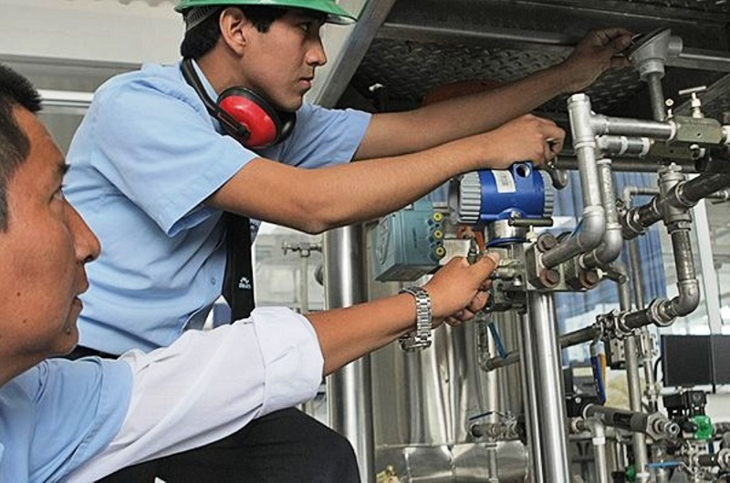

Gasfitería y plomería
Soluciones rápidas para instalaciones de agua y desagüe con técnicos certificados.
- Detección y reparación de fugas
- Desatoros de tuberías y desagües
- Instalación de grifería y tanques
Encuentra gasfiteros, electricistas, técnicos y personal de limpieza verificados cerca de ti. Match en tiempo real, perfiles con historial y calificaciones reales.

Describe tu problema o elige la categoría de servicio: plomería, electricidad, limpieza, mudanzas y más.
Nuestra plataforma identifica trabajadores disponibles, verificados y cercanos a tu ubicación en tiempo real.
Acepta la propuesta, chatea con el trabajador y recibe notificaciones del estado de tu servicio en todo momento.
Conectamos tu hogar con profesionales verificados en las categorías de servicio más solicitadas en Lima. Elige lo que necesitas y recibe ayuda en minutos.
Soluciones rápidas para instalaciones de agua y desagüe con técnicos certificados.
Mantenimiento e instalaciones eléctricas seguras para tu hogar.
Personal de confianza para mantener tu casa impecable.
Arreglos generales y reparación de equipos del hogar.
Traslados seguros con personal de apoyo para tus enseres.
Acabados prolijos para renovar tus espacios.
Trabajos en madera a medida y reparaciones.
Cuidado y mantenimiento de tus áreas verdes.
¿No encuentras lo que buscas? También cubrimos otros servicios del hogar.
Solicitar un servicioNo esperes más. Encuentra un profesional disponible en tu zona en minutos.
Solicitar servicio ahora